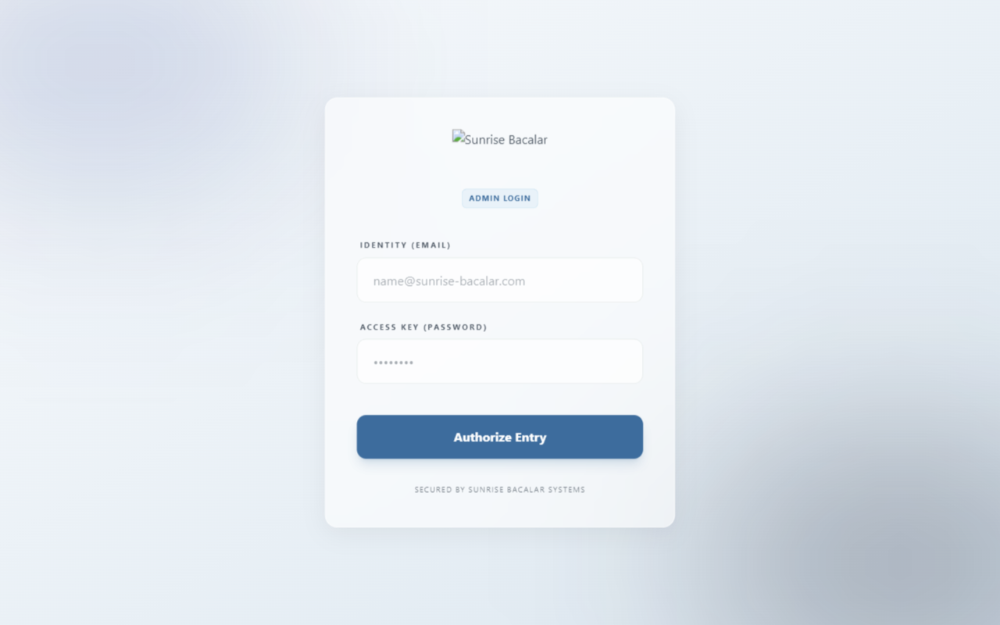
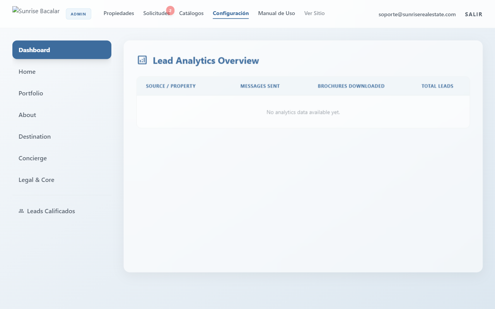
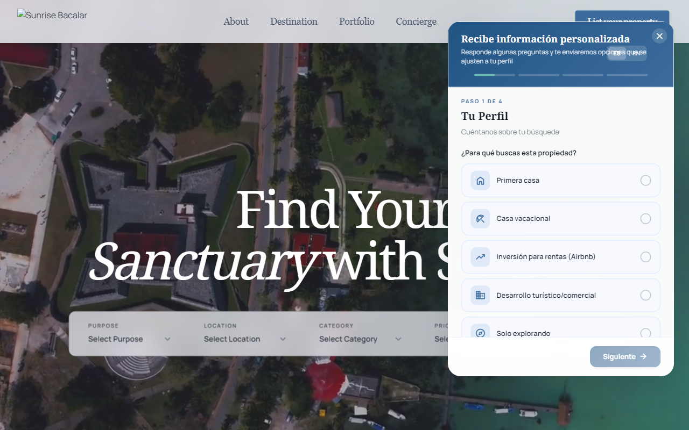
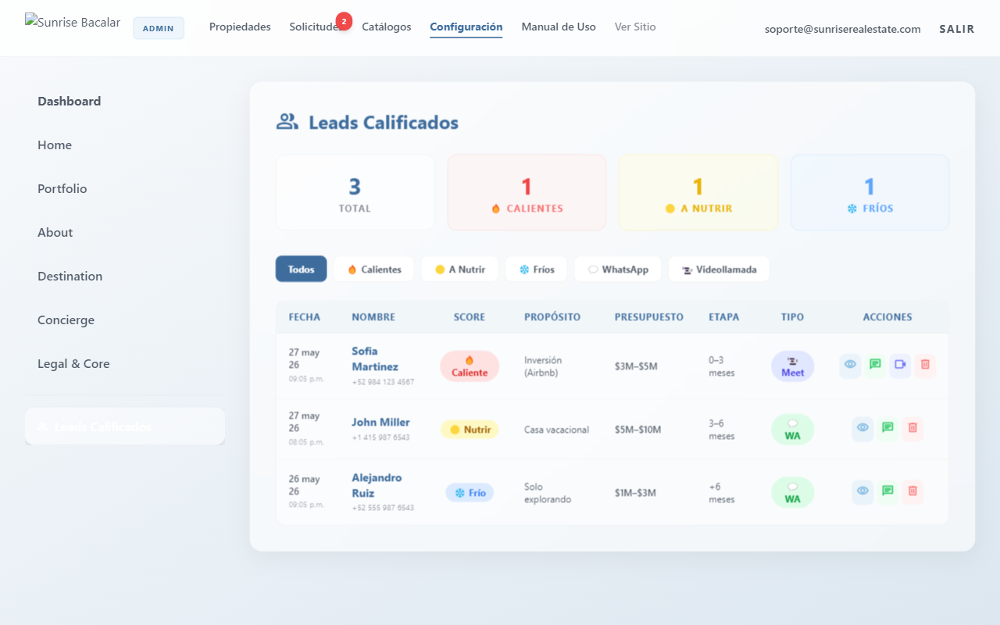
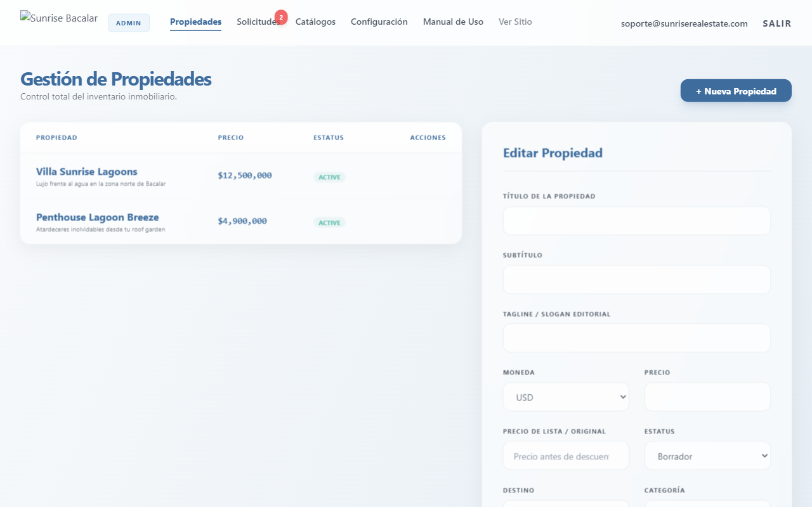
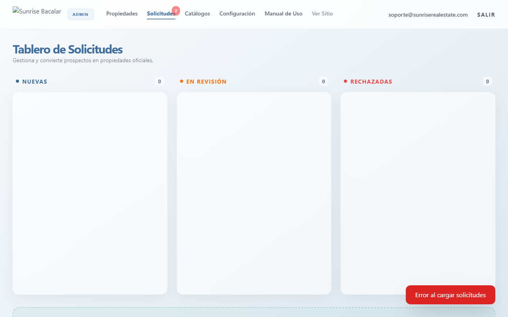
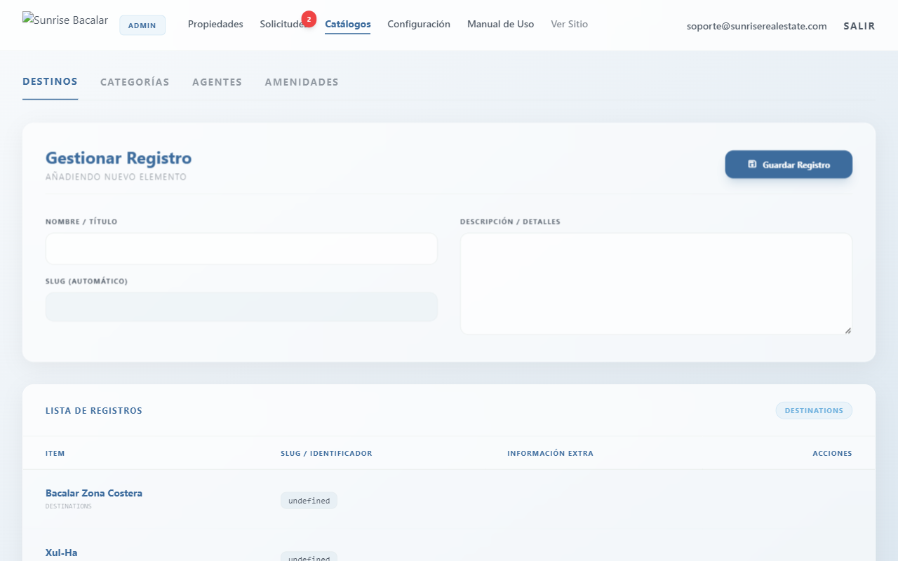
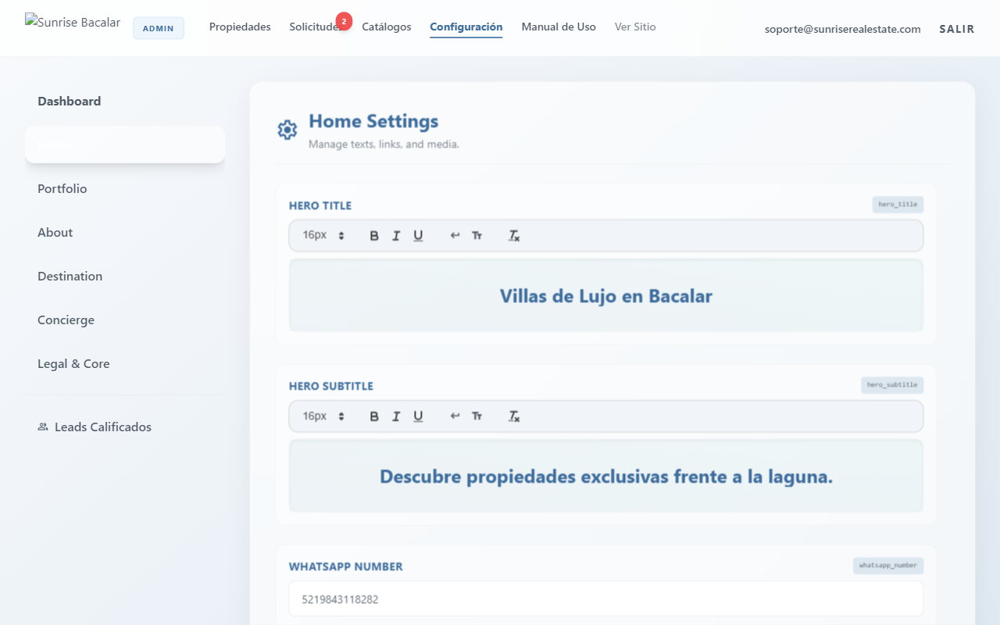

MANUAL DE USUARIO
Guía de administración y actualización del portal de lujo Sunrise Bacalar
help1. Introducción
¡Bienvenido al manual del administrador de Sunrise Bacalar! Este documento ha sido diseñado de manera 100% no técnica para guiarte en el uso, control y mantenimiento del panel de control de tu sitio web de bienes raíces.
Con este panel serás capaz de actualizar los precios de venta, subir galerías de fotos de propiedades de lujo, agrupar las amenidades, gestionar los perfiles de tus asesores, y recibir las solicitudes de videollamadas con clientes calificados en tiempo real, todo de forma visual e intuitiva.
infoRecomendación Inicial
Antes de realizar cambios importantes en tus propiedades o dar de alta nuevos destinos turísticos, te sugerimos tener organizadas las fotos correspondientes en tu computadora en alta resolución.
timer2. Garantía y Soporte Técnico
A partir del desarrollo del sistema actual, cuentas con un **periodo de 3 meses de garantía activa** para reportar dificultades técnicas o solicitar ajustes visuales y ediciones gráficas sobre lo ya construido.
¿Qué cubre este periodo?
- Ajustes gráficos: Cambios en la tipografía, recolocación de elementos visuales secundarios, paletas de colores o reposicionamiento de logos de la marca.
- Soporte ante incidencias: Apoyo inmediato si el chat del asistente no responde, si no se registran leads en el panel, o si hay dificultades para agendar reuniones.
contact_supportCómo solicitar ayuda
Para hacer válida la garantía de soporte en el plazo indicado por el contador, envía un correo detallado al equipo de desarrollo explicando la sección con la que presentas dudas.
login3. Acceso y Seguridad
Para ingresar al panel de control, accede desde tu navegador web a la dirección privada que te ha sido asignada para la administración de tu página.
Encontrarás una pantalla sencilla donde debes introducir tus datos de inicio de sesión:
- Correo electrónico: Ingresa tu cuenta de administrador registrada.
- Contraseña: Digita la clave segura de acceso.
- Haz clic en el botón Iniciar Sesión.

lockCierre de Sesión Seguro
Al terminar tus actividades, te recomendamos pulsar el botón **"Salir"** en la esquina superior derecha del encabezado. Esto limpia las credenciales activas del navegador para evitar que terceros realicen cambios no autorizados.
dashboard4. Resumen General (Dashboard)
Al iniciar sesión verás la pantalla de Configuración que muestra el Dashboard en su pestaña principal. Este es tu centro de control rápido para la actividad comercial.

En esta sección encontrarás:
- Interés por Propiedad: Tabla detallada que lista las propiedades de la web y te muestra cuántas personas han enviado mensajes directos de consulta por ellas, y cuántos folletos digitales se han descargado.
- Métricas rápidas: Te ayuda a identificar de un vistazo qué listados son los más llamativos para el mercado.
forum5. Asistente de Chat Inteligente
El botón de WhatsApp que ven los clientes en el sitio público actúa como un asistente interactivo que filtra a los clientes calificados en lugar de abrir un chat vacío.

Flujo del Asistente:
- Paso 1: Propósito de compra: El prospecto responde si busca su primera vivienda, inversión para Airbnb, desarrollo o exploración.
- Paso 2: Rango de inversión y Pago: Selecciona su presupuesto aproximado y método de pago (recursos propios o crédito).
- Paso 3: Urgencia de Compra: Detalla si está listo para comprar (0 a 3 meses), evaluando (3 a 6 meses) o solo investigando.
rocket_launchRuteo Automático por Google Meet
Si el sistema detecta que es un **Cliente Caliente** (compra en 0-3 meses y presupuesto mayor a $3M), el asistente le habilitará agendar una **Videollamada por Google Meet** en el día de su preferencia. El sistema creará la videollamada automáticamente en el calendario comercial de la agencia e invitará al cliente a su correo.
group6. Bandeja de Leads Calificados
Cada vez que un cliente finaliza el cuestionario del asistente del chat, su información y respuestas completas se guardan en esta bandeja.

Cómo dar seguimiento a los prospectos:
- Tarjetas de Prioridad: Los contadores superiores dividen tus prospectos en 🔥 **Calientes** (prioridad inmediata para llamada), 🟡 **A nutrir** (interés medio para WhatsApp), y ❄️ **Fríos** (interés bajo o a futuro).
- Acciones Directas: La tabla cuenta con botones rápidos para abrir una ventana de chat directo en WhatsApp con el teléfono del cliente, o presionar el botón de **Detalle** para leer todo su cuestionario contestado en un modal flotante.
real_estate_agent7. Publicación de Propiedades
En el menú superior, la sección **Propiedades** es el inventario total de inmuebles que se muestran a tus compradores en la galería web.

Pasos para publicar una nueva propiedad:
- Presiona el botón + Nueva Propiedad en la parte superior del listado.
- Completa los datos de la ficha:
- Título y Descripción: Nombre comercial atractivo y narrativa comercial.
- Características Físicas: Define el número de recámaras, baños completos, medios baños y áreas de construcción en metros cuadrados.
- Precios: Define el precio de oferta actual. Si colocas una cifra en *Precio Anterior*, la web tachará el valor previo mostrando una insignia de descuento.
- Imágenes: Arrastra y sube la foto principal y añade fotos adicionales a la galería para el carrusel de imágenes de la propiedad.
- Agente Asignado: Selecciona qué asesor de tu equipo recibirá las solicitudes directas de contacto de esta propiedad.
- Fija el estado en **Disponible** (para publicarlo) o **Borrador** (para guardarlo sin que se muestre en la web).
- Haz clic en Guardar propiedad.
dashboard_customize8. Solicitudes de Propietarios
A través de la sección **Solicitudes**, administras las ofertas de personas interesadas en que Sunrise Bacalar promueva y venda sus propiedades.

Uso del Tablero Kanban:
- Organización por columnas: Arrastra las tarjetas entre "Nuevas", "En Revisión" y "Aprobadas/Rechazadas" para mantener al equipo alineado.
- Aprobar y Publicar: Al hacer clic en "Aprobar", el sistema cargará los datos de la propuesta directamente en la ficha de propiedad nueva para que solo completes detalles y publiques sin escribir de nuevo.
folder_open9. Gestión de Catálogos de Soporte
Los catálogos te permiten alimentar los desplegables del panel para evitar errores de escritura al subir propiedades.

Esta sección administra:
- 📍 Destinos: Las ubicaciones geográficas de las propiedades (ej: Bacalar Costera, Centro, Xul-Ha). Al agregar un destino, este aparece al instante en los filtros de búsqueda rápida del inicio de la web.
- 🏷️ Categorías: Los tipos de inmuebles (ej: Villas, Departamentos, Penthouses).
- 👥 Agentes: Nombre, teléfono, correo y fotografía del equipo. Indispensable para asignarlos a las fichas de las propiedades.
- 🔑 Amenidades: La lista de características (Muelle privado, Alberca infinity, etc.) con sus respectivos íconos visuales de catálogo.
tune10. Edición de Textos de la Web
El menú de **Configuración** cuenta con pestañas dedicadas a cambiar de forma directa los textos descriptivos e imágenes de cada página del portal.

Cómo realizar cambios:
- Ve a la pestaña de la página que deseas cambiar (ej: *Home*, *About*, *Destination*).
- Modifica el texto en el campo correspondiente (títulos, biografías, cifras de contadores).
- Haz clic en el botón Guardar cambios en la esquina superior derecha del panel.
gavel11. Políticas Legales
Mantener las políticas actualizadas es fundamental para la seriedad comercial de la empresa.
En la pestaña **"Legal & Core"** de Configuración, encontrarás los editores de la **Política de Privacidad** y los **Términos de Servicio**. Cualquier modificación que guardes aquí se verá reflejada de forma automática en los enlaces legales que abren tus clientes al enviar sus datos en los formularios del sitio.